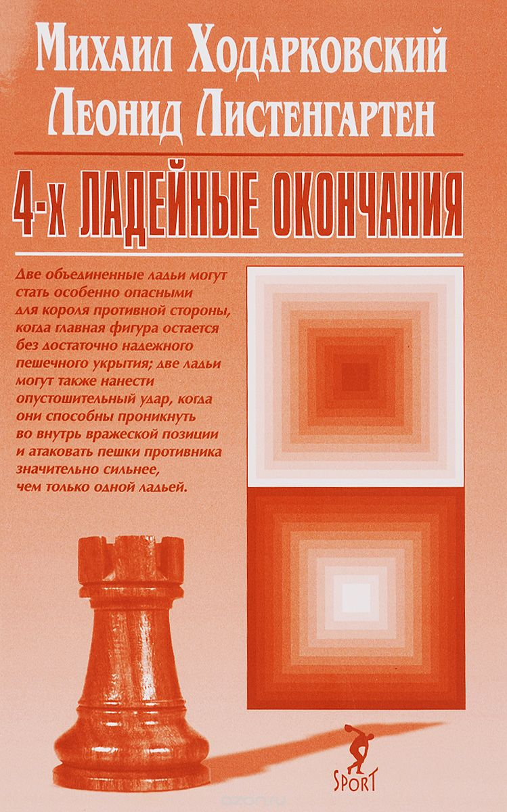
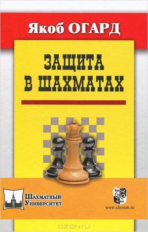

Обо мне
Книги
Фильмы
для 1-го разряда и выше
для 1-го разряда и выше
для 1-го разряда и выше


Previous
Next
Каким человеком ты станешь, определяет два фактора: люди, с которыми общаешься, и книги, которые читаешь.